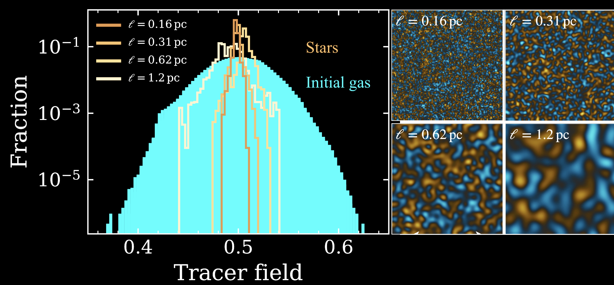
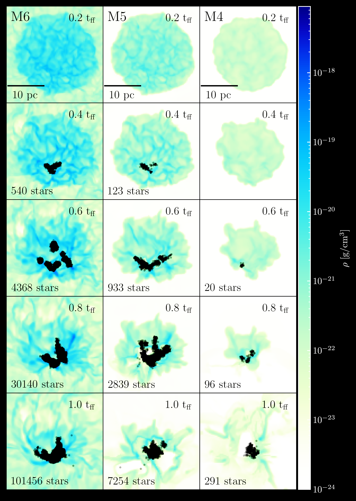

Torch is an open-source code to simulate coupled gas and N-body dynamics in astrophysical
systems, and it is primarily used for simulating star cluster formation.
Torch combines
the FLASH code for gas dynamics
and the ph4 code for direct N-body evolution
via the AMUSE framework.
An introduction to Torch is given by
Wall et al. 2019, 2020,
and Joshua Wall's
Ph.D thesis
(pdf mirror). The Torch project is supported by NASA grant no. NNX14AP27G and NSF grant no. AST18-15461 and AST23-07950.
Evolution of a star cluster forming from a 2x104 M⊙ cloud. Primordial binary formation is included. The colours of the stars change with age, going from white to golden yellow.
This is the subcluster ejection scenario (SCES), where a subset of stars from an infalling subcluster is ejected out of the cluster via a tidal interaction with the contracting gravitational potential of the assembling cluster. Runaways formed in the same SCES have similar ages, velocities, and ejection directions. This movie shows formation and ejection of an SCES runaway star group. Left: Stars as they are forming in the cluster. Right: Gravitational potential of both the stars and gas. The trajectories of the runaway stars are shown as lines. Once each runaway star forms, it appears with a star marker.
Centrally concentrated gas collapses further during star formation (Assilkhan et al. in prep)
Stellar density profiles and gas slices compared to analytic prediction (blue) of Parmentier & Pfalzner (2013) that assumes in situ collapse of gas into stars.
Abundance distribution inherited by stars from gas (Andersson et al. in prep)

Turbulent, spherical clouds of 104 M⊙ with different initial tracer distributions shown on the right (Kolmogorov spectra with ℓ=L/fmax). Larger-scale variation in gas widens stellar distribution.
High star formation efficiency in young massive clusters (Polak et al. 2024a)

Models of 104, 105, and 106 M⊙ star-forming turbulent clouds (M4, M5, and M6). Stars below 4 M⊙ are agglomerated into dynamical "super"-star particles.
Massive interacting binaries enhance feedback in star-forming regions (Cournoyer-Cloutier et al. subm.)
Modelling binary stellar evolution in Torch has a big impact on the strength of stellar feedback and the size of the feedback bubble. More ionizing radiation escapes due to binary interactions stripping the star and exposing its hot core. More kinetic energy is injected into the bubble due to mass transfer events.